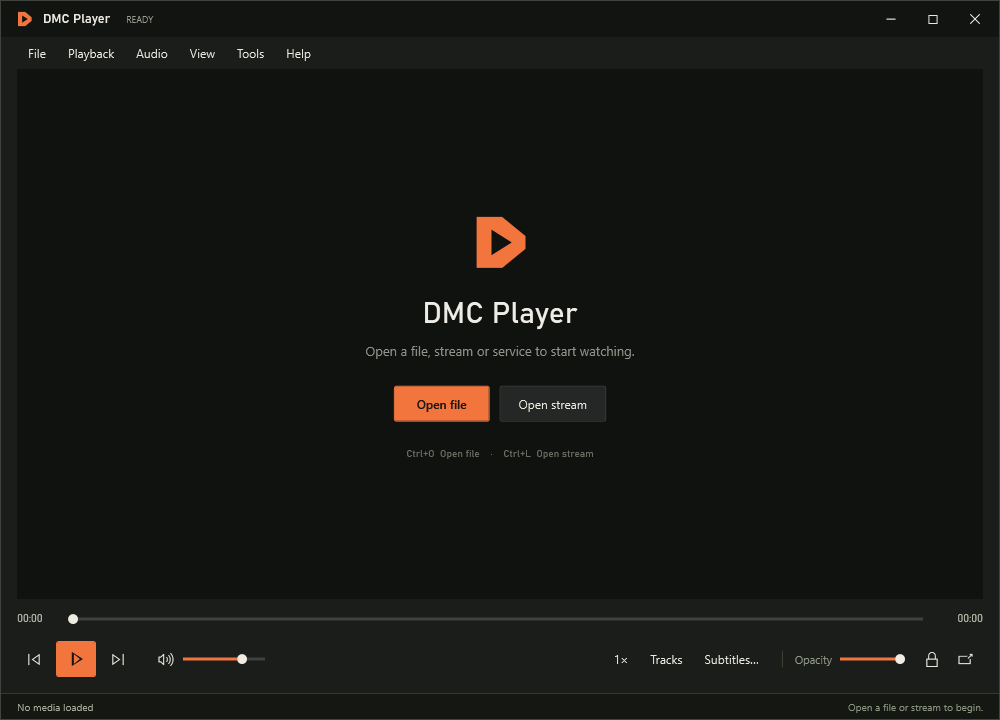

Resizable mini player
Drag it to a corner and resize it to fit. Hover over the picture for playback and volume controls.
Free Windows media player
Watch TV and movies while you game.
Keep a film, a show or live TV in a small window over your game. Open your own files, stream links or streaming services, then move the picture where it suits you.
downloadsTotal reported by GitHubChecked
Drag it to a corner and resize it to fit. Hover over the picture for playback and volume controls.
Press Ctrl + Alt + L to send mouse clicks through to your game. Press it again when you want to use the player.
Opening a video plays it on its own. Add files to a queue yourself when you want to watch a few in order.

Browse titles and episodes, install compatible add-ons and choose a source.
Browse films and TVChoose a direct channel stream, save favourites or import your own channel list.
Find channelsHost a session, send friends the invite link and chat over the video.
Watch with friends